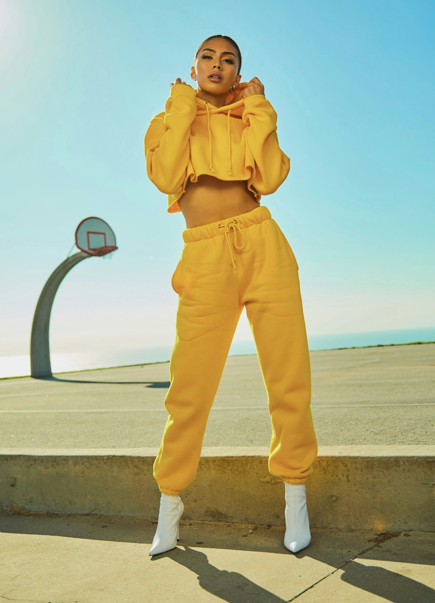
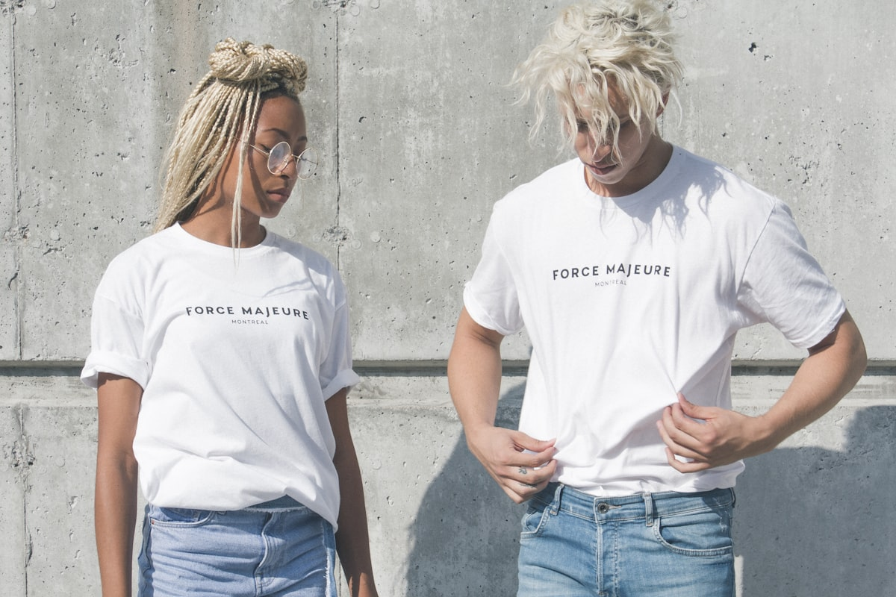
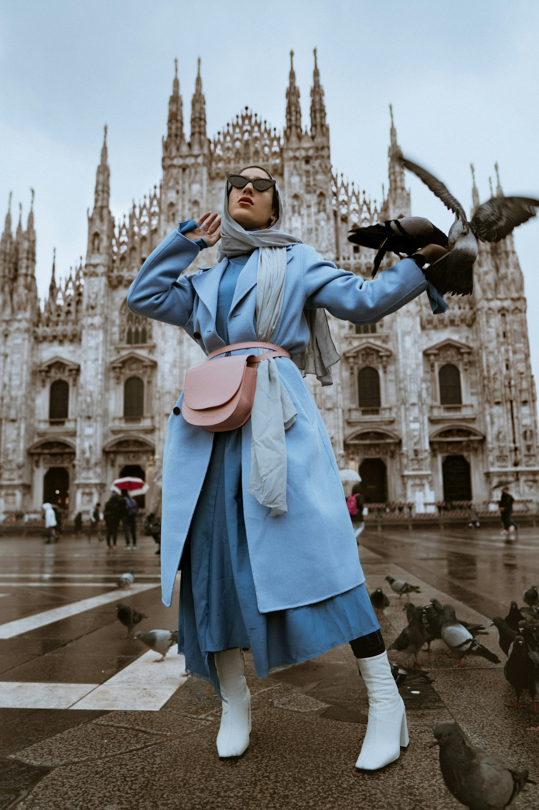
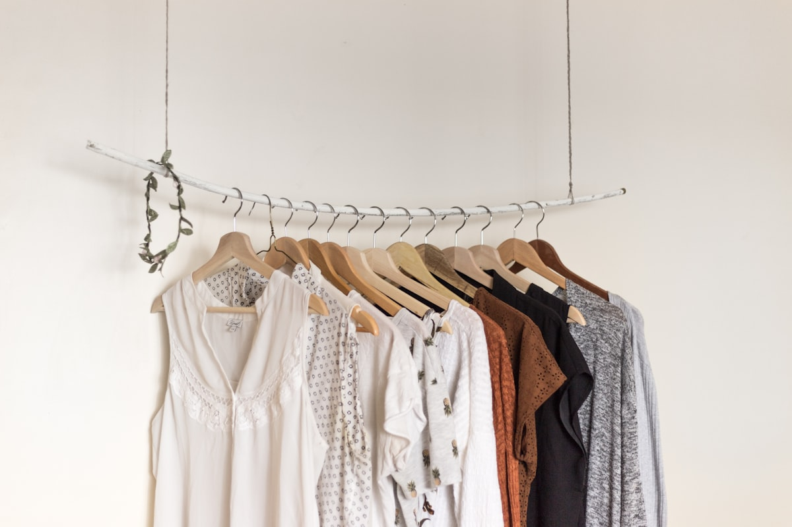

Architectural Edging Woven in Real Gold
Brocade Trimly engineers high-density brocade borders, metallic bullion fringe, and gilded jacquard passementerie for master couturiers, historic opera houses, and royal restoration ateliers globally.
The Alchemy of Narrow-Fabric Brocade
A garment's boundary defines its architectural silhouette. Passementerie is the ancient art of framing haute couture through sculptural borders and metallic light reflection.
At our Mercer Street workshop in Manhattan, we revive narrow-fabric jacquard weaving techniques perfected during the Italian Renaissance. Working with historic 32-shuttle mechanical looms, we weave continuous gold-leaf wrapped silk filaments into dense, dimensional ribbons that provide structural weight and hypnotic light reflection to eveningwear hem lines.
Unlike commercial polyester ribbons that tarnish or crack along fold lines, our trims incorporate pure silver-plated and gold-plated copper leaf wound tightly around pure mulberry silk cores, providing generational flexibility and heirloom permanence.
-
⚜️
Hand-Twisted Bullion Fringe
Spiraled metallic coils crafted with calibrated weight to create kinetic sway on evening hemlines.
-
⚜️
Dimensional Filigree Galloon
Multi-layered raised embroidery engineered to conceal and reinforce structural garment seams.
Master Passemeterie & Brocade Borders
Woven on order in custom widths from 12mm to 120mm to match your couture runway briefs.

The Doge Acanthus Galloon
Deep repoussé metallic ribbon featuring classical acanthus scrollwork woven with antique gold wire and midnight navy silk warp ground.

Heavy Spiral Bullion Fringe
Dense hand-twisted gold bullion coils mounted to a woven gimp header, providing dramatic kinetic swing and auditory rustle on evening capes.
The Byzantine Chevron Band
Sharp geometric chevron border drafted with double-shuttle brocade floats, creating high structural stiffness for lapel framing and corset channels.

0.02mm Annealed Metallic RibbonReal Gold Leaf & Silk Core Chemistry
Why does authentic metallic passementerie drape with fluid grace while synthetic lurex feels stiff and abrasive? The answer lies in filament metallurgy.
Our metallic threads are produced by cold-rolling high-purity copper or silver ribbons down to a thickness of only 0.02 millimeters, electroplating them with pure 24-karat gold, and spirally wrapping this metallic ribbon around a core of continuous-filament mulberry silk.
The internal silk core provides tensile elasticity and thermal breathability, while the exterior gold ribbon reflects incident light with warm, specular brilliance that never oxidizes to a greenish copper patina.
Engineered Structural Garment Edging
In avant-garde structural fashion, a brocade trim is not merely decorative; it serves as an external load-bearing seam reinforcement.
When edging high-mass garments—such as 40-meter silk velvet capes or tiered horsehair ballgowns—seams require localized tensile reinforcement to prevent seam stretching and bias distortion. Our passementerie ribbons are woven with integrated selvedge cords that distribute gravitational loads evenly across the garment's perimeter.
Couturiers stitch our ribbons along hems, cuffs, and front plackets to create crisp, architectural lines that maintain their sculptural geometry under bright runway lighting and dynamic bodily locomotion.

High-Load Seam StabilizationMuseum & Heritage Conservation Services
Faithfully recreating lost 17th, 18th, and 19th-century passementerie ribbons for conservation institutions worldwide.
Ecclesiastical Vestment Restoration
Forensic analysis of liturgical chasubles and copes, replicating antique bullion embroideries and heavy silver cordings with identical thread twist ratios.
Opera & Theatrical Regalia
Custom weaving grand coronation mantles and stage regalia for metropolitan opera houses requiring maximum durability under rigorous stage lighting.
Palace Interior Passemeterie
Hand-weaving monumental curtain tiebacks, metallic braidings, and bullion pelmet trims for historic landmark residences and embassies.
The Bespoke Trimming Journey
From initial design brief to master woven yardage delivered to your design house.
1. Brief & Swatch Review
Submit your garment sketches, desired border width, metallic alloy preference, and base fabric swatches for color harmony.
2. Loom Vector Drafting
Our textile engineers translate your design into digital jacquard warp-weft point cards with micro-millimeter precision.
3. Prototype Strike-Off
We weave a 30-centimeter strike-off sample on our sample loom, dispatched overnight for couture house sign-off.
4. Master Weaving & Spooling
Full yardage is woven on our narrow-fabric looms, hand-inspected under high-magnification lenses, and spooled on cedar reels.
Perspectives from Master Couturiers
What creative directors and textile conservators say about Brocade Trimly.
"Brocade Trimly created the gilded acanthus border for our Paris couture runway finale. The weight, drape, and metallic luster under spotlight were breathtaking. A true master atelier."
"Restoring our cathedral's 18th-century vestments required identical gold bullion fringes. Brocade Trimly matched the thread metallurgy and twist angles flawlessly. Highly recommended."
"The rapid strike-off turnaround saved our Metropolitan Gala project. Having a bespoke metallic trim woven on Mercer Street in days is an irreplaceable luxury resource."
Frequently Asked Questions
Guidance on minimum yardages, lead times, care instructions, and metallic alloys.
For custom woven jacquard trims, our minimum production run is just 10 meters, allowing emerging couture ateliers to commission bespoke ribbons without excessive inventory overhead. In-stock catalog trims are available by the single meter.
Because our threads feature real gold and silver leaf wrapped around pure silk cores, they must be pressed with a warm iron (never hot) using a dry cotton pressing cloth. We recommend specialized luxury dry cleaning with hydrocarbon or perchlorethylene solvents.
Yes. Our conservation laboratory performs microscopic warp and weft counts, spectral metallic analysis, and dye extraction on fragments as small as two centimeters to engineer an authentic historical replica.
Initial strike-off prototypes are completed within 5 to 7 business days. Full custom yardage (10 to 100 meters) is typically woven and dispatched within 2 to 3 weeks from our New York facility.
Elevate Your Garments with Master Passementerie
Consult with our master weavers at our Mercer Street atelier or request our comprehensive metallic ribbon swatch book delivered to your design studio.